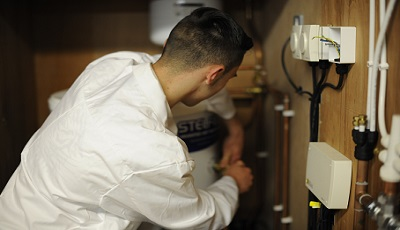
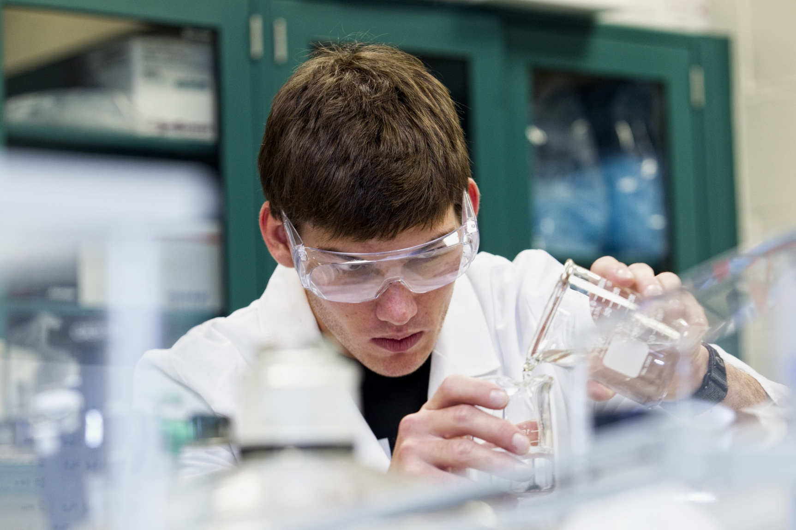

Our Academic Strands
Explore the different academic strands offered at Upper Bicutan National High School.

General Academic Strand (GAS)
Provides a balanced education in different fields, perfect for students exploring multiple disciplines.
Humanities and Social Sciences (HUMSS)
Focuses on understanding human behavior, communication, and societal development.

Science, Technology, Engineering, and Mathematics (STEM)
Offers a strong foundation in science and math, perfect for aspiring engineers and scientists.
Welcome to Upper Bicutan National High School
Welcome to Upper Bicutan National High School!
At UBNHS, we are dedicated to fostering a learning environment that prepares students for the challenges of the future. Our diverse academic programs provide students with a wide range of options tailored to their interests and career goals.
General Academic Strand (GAS): Designed for students who prefer a broad exploration of various disciplines, GAS allows flexibility and offers a balanced academic experience across different fields of study.
Science, Technology, Engineering, and Mathematics (STEM): For students passionate about innovation, problem-solving, and scientific exploration, the STEM strand provides a solid foundation in math and science, preparing them for careers in technology and engineering.
Humanities and Social Sciences (HUMSS): If your interests lie in understanding society, culture, and human behavior, the HUMSS strand empowers students with skills in communication, critical thinking, and social awareness, perfect for careers in education, social work, or politics.
At Upper Bicutan National High School, we strive to nurture future leaders through academic excellence, holistic development, and a strong sense of community. Join us and discover your path to success!
About Us
Our school is committed to nurturing academic excellence and holistic growth.
Admissions
Enroll in our programs today and become part of our community of learners.